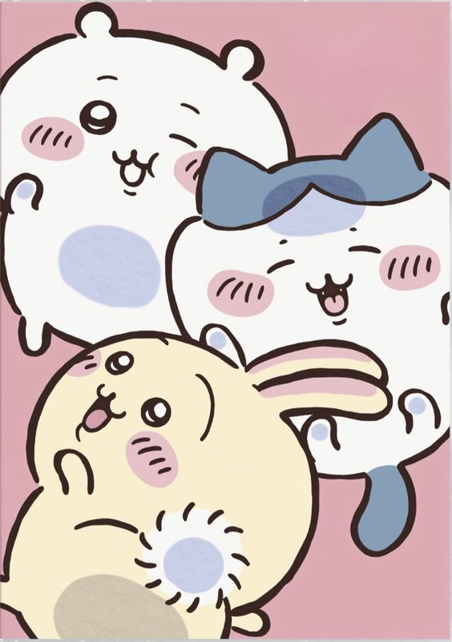

eNTJ : i같은 e입니다. 은근 소심하고 겁도 많아서 e라고 하면 종종 놀라시는 분들이 있어요. 이래봬도 노는 거 좋아하고 나서기 좋아하는 천상 e랍니다.
맑눈광 : 친구들 사이에서 맑눈광, 도레미친놈라고 불립니다. '일단 해보자'와 '안되면 되게하라'가 인생 모토입니다.
치이카와 광인 : 차가워 보이는 인상과 달리 귀염뽀짝한 것들을 좋아합니다. 먼작귀에 우사기 정말 좋아해요!